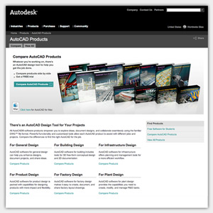

Services
Javascript Applications
Frontend and Backend Web Development
Mobile Applications
Work
AutoCAD Product Chooser
Written using the Backbone javasctipt framework, the AutoCAD Product Chooser is entirely executed within the browser.
Dominium Benefits
Dominium Benefits employs cutting edge 3D graphics to create stunning visual effects while gracefully falling back for unsuported browsers.
California Black Ripe Olives

The California Black Ripe Olives website is built on Wordpress and features a video, article and recipe management system containing over 600 entries.
Connect
Kevin Rockwood
kevin@rockwood.me
347-625-9663
About
I'm workin on it